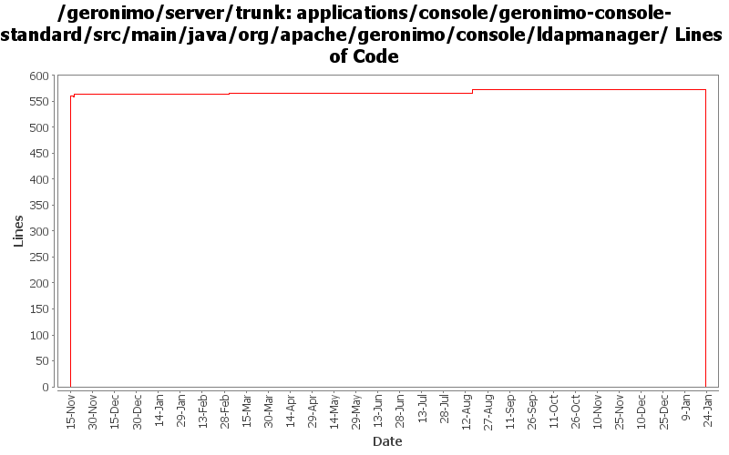

[root]/applications/console/geronimo-console-standard/src/main/java/org/apache/geronimo/console/ldapmanager

| Author | Changes | Lines of Code | Lines per Change |
|---|---|---|---|
| Totals | 13 (100.0%) | 1161 (100.0%) | 89.3 |
| ccardona | 4 (30.8%) | 571 (49.2%) | 142.7 |
| vamsic007 | 2 (15.4%) | 563 (48.5%) | 281.5 |
| gawor | 1 (7.7%) | 23 (2.0%) | 23.0 |
| kevan | 2 (15.4%) | 2 (0.2%) | 1.0 |
| jdillon | 4 (30.8%) | 2 (0.2%) | 0.5 |
(GERONIMO-3747) Moved applications/* to plugins/*
0 lines of code changed in 2 files:
fix ldap viewer connect problems (GERONIMO-3383, GERONIMO-2851)
23 lines of code changed in 1 file:
Std props
2 lines of code changed in 2 files:
modified svn properties
563 lines of code changed in 2 files:
GERONIMO-2537 Update the src headers in the non-module files. They need to be compliant with the new ASF src header and copyright policy (http://www.apache.org/legal/src-headers.html). I also did some cleanup of the src headers and tried to get them in a consistent format
2 lines of code changed in 2 files:
GERONIMO-2537 All Geronimo source files must be brought in line with the new ASF source header and copyright notice policy
12 lines of code changed in 2 files:
GERONIMO-1823 Add Embedded LDAP Server Viewer Portlet
559 lines of code changed in 2 files: